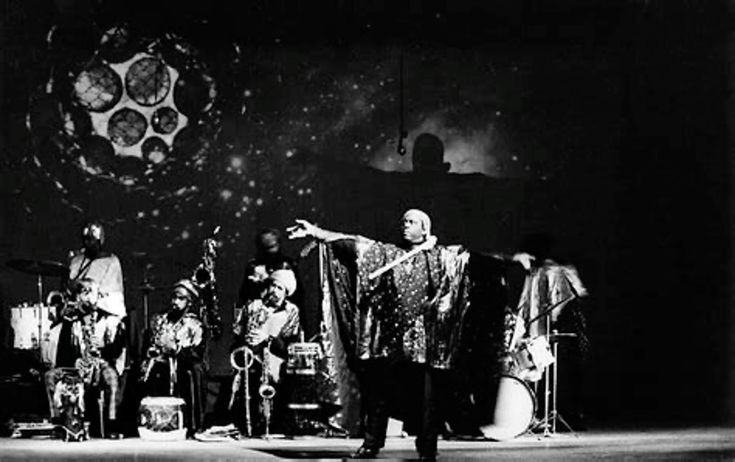

POEMS4U

Poems Short-Stories Philosophy Art-Criticism Movies Video-Transmissions Miscellaneous

POEMS4U is a project which at present consists of a web site and youtube channel. Its purpose is to share with the world artworks which have been created using the SOLAR-MYTH APPROACH.
For questions, concerns, comments, requests, friendly correspondence, desires to be notified each time there is a new post, or astrological consultation; please email poem4u@proton.me